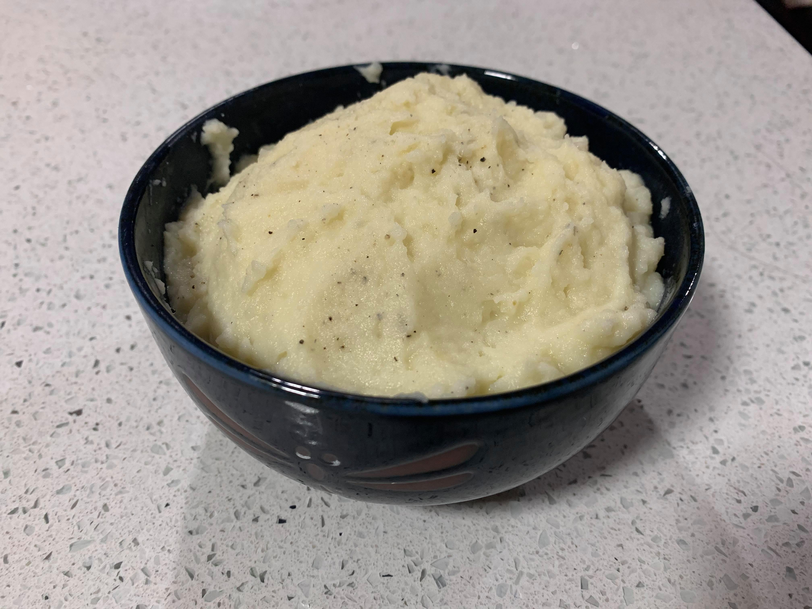

Mashed Potatoes

Ingredients:
- 1 lb Potatoes
- 1 cup Milk
- 2 tbsp Butter
- Salt
- Pepper
Instructions:
- Bring a pot of salted water to a boil. Add potatoes and cook until tender, about 15 minutes; drain.
- Using a potato masher, mash the potatoes until smooth and mix in the milk and butter
- If the mixture is too thin, reduce over medium heat while stirring constantly until the desired thickness is achieved.
- Season with salt and pepper to taste.